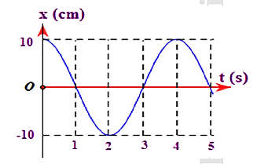
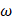
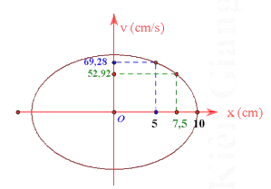
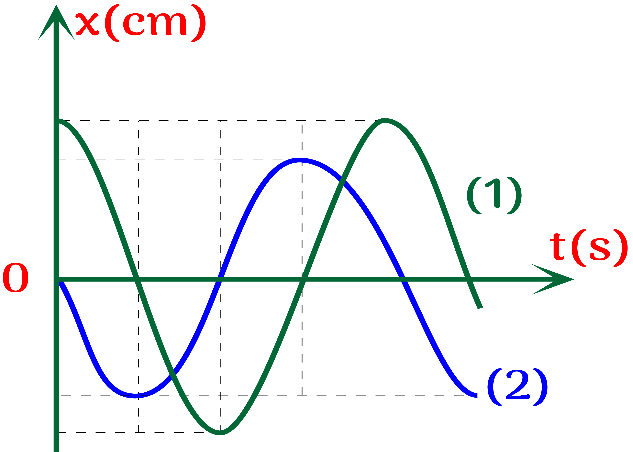
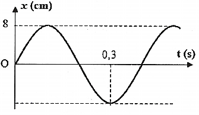
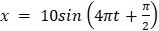
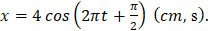
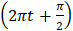
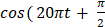
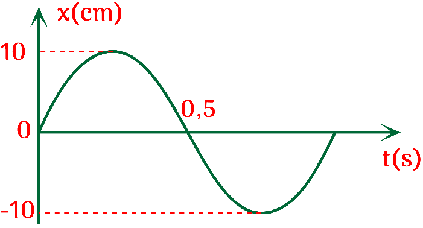

📋 Quy định làm bài
- Thời gian: 45 phút. Còn 10 phút hệ thống nhắc; hết giờ có thêm 5 phút gia hạn rồi tự động nộp.
- Bài làm ở chế độ toàn màn hình. Chuyển tab, mất focus, thoát toàn màn hình đều bị ghi nhận và báo cho giáo viên.
- Không dùng chuột phải, sao chép/dán, phím tắt. Trợ lý AI chỉ mở sau khi nộp bài. Phần tự luận: AI gợi ý điểm, giáo viên duyệt điểm chính thức.
PHẦN I. Câu trắc nghiệm nhiều phương án lựa chọn
Mỗi câu có 4 phương án, chỉ chọn một đáp án đúng (0,25 điểm).
1
Pha của dao động được dùng để xác định
2
Một vật dao động điều hòa có phương trình $x=2\cos\left(2\pi t-\frac{\pi}{6}\right)$ (cm, s). Li độ của vật tại thời điểm $t=0{,}25$ s là
3
Đồ thị biểu diễn $x=A\cos(\omega t+\varphi)$. Giá trị cực đại của gia tốc vật dao động là:

4
Một chất điểm dao động điều hòa trên trục Ox. Khi chất điểm đi qua vị trí cân bằng thì tốc độ của nó là 20 cm/s. Khi chất điểm có tốc độ là 10 cm/s thì gia tốc của nó có độ lớn là $40\sqrt{3}$ cm/s². Biên độ dao động của chất điểm là
5
Chuyển động nào sau đây không được coi là dao động cơ?
6
Một chất điểm có khối lượng m, dao động điều hòa quanh vị trí cân bằng O với tần số góc

, biên độ A. Lấy gốc thế năng tại O. Cơ năng W tính bằng biểu thức7
Một hệ dao động chịu tác dụng của ngoại lực tuần hoàn $F_n=F_0\cos(10\pi t)$ (N) thì xảy ra hiện tượng cộng hưởng. Tần số dao động riêng của hệ phải là
8
Trên hình vẽ là đồ thị sự phụ thuộc của vận tốc theo li độ của một chất điểm dao động điều hòa trên trục Ox. Vận tốc cực đại của dao động gần nhất với giá trị nào sau đây?

9
Trong những dao động tắt dần sau, trường hợp nào tắt dần nhanh có lợi
10
Đồ thị biểu diễn mối quan hệ giữa gia tốc và li độ là một
11
Một người đang đưa võng. Sau lần kích thích bằng cách đạp chân xuống đất đầu tiên thì người đó nằm yên để cho võng tự chuyển động. Chuyển động của võng trong trường hợp này là
12
Hiện tượng cộng hưởng xảy ra khi nào?
13
Đồ thị biểu diễn hai dao động điều hòa cùng phương, cùng tần số.
Nhìn vào đồ thị ta có thể kết luận rằng

Nhìn vào đồ thị ta có thể kết luận rằng
14
Đồ thị dao động điều hòa của một vật như hình vẽ. Phương trình dao động của vật là:

15
Một vật nhỏ thực hiện dao động điều hòa theo phương trình

(cm) với t tính bằng giây. Động năng của vật đó biến thiên với chu kì bằng16
Phát biểu nào sau đây không đúng? Đối với dao động cơ tắt dần thì
17
Tần số góc có đơn vị là
18
Một vật dao động điều hòa với tần số góc 5 rad/s. Khi vật đi qua li độ 5 cm thì nó có tốc độ là 25 cm/s. Biên độ dao động của vật là
PHẦN II. Câu trắc nghiệm đúng sai
Trong mỗi ý a), b), c), d) chọn Đúng hoặc Sai. Đúng 1 ý: 0,1 · 2 ý: 0,25 · 3 ý: 0,5 · 4 ý: 1,0 điểm.
1
Một vật dao động điều hòa với phương trình

a) Tần số góc của dao động là $2\pi$ rad/s.
b) Chu kì dao động của vật là 1 s.
c) Pha ban đầu của vật là

rad.d) Quãng đường vật đi được trong một chu kì là 16 cm.
2
Một con lắc lò xo có khối lượng vật nặng m = 1 kg, dao động điều hoà với chu kì T = 0,2π (s), biên độ dao động bằng 2 cm.
a) Độ cứng của lò xo là 100 N/m.
b) Trong quá trình dao động thì cơ năng của con lắc biến thiên điều hoà theo thời gian.
c) Cơ năng của con lắc là 2 mJ.
d) Động năng của con lắc ở li độ 1 cm là 0,15 mJ.
3
Hình dưới đây là dao động điều hòa của một vật.

a) Đồ thị (li độ - thời gian) trong dao động điều hoà có dạng hình sin.
b) Tần số góc của dao động là 0,4 rad/s.
c) Pha ban đầu của dao động là  rad.
rad.
rad.d) Phương trình vận tốc của vật là $v=100\pi\cos(5\pi t)$ cm/s.
4
Một lò xo có độ cứng 100 N/m, một đầu cố định một đầu được gắn vật có khối lượng 200 g. Biết vật luôn chịu tác dụng của một ngoại lực biến thiên điều hoà có biểu thức F = 10

) (N). Lấy π² = 10.a) Vật dao động cưỡng bức.
b) Chu kì dao động của vật là 10 s.
c) Trong quá trình dao động biên độ của vật luôn là 10 cm.
d) Để vật dao động với biên độ cực đại thì treo thêm vật có khối lượng 25 g vào lò xo.
PHẦN III. Câu trắc nghiệm trả lời ngắn
Điền đáp số (có thể dùng dấu phẩy hoặc dấu chấm thập phân). Mỗi câu 0,25 điểm.
1
Một vật dao động điều hòa trên trục Ox. Hình bên là đồ thị biểu diễn sự phụ thuộc của li độ x vào thời gian t. Độ lớn vận tốc cực đại của vật là bao nhiêu cm/s? (Lấy $\pi=3{,}14$)

cm/s
2
Một vật dao động với phương trình  (cm). Chu kì dao động của vật là bao nhiêu (s)?
(cm). Chu kì dao động của vật là bao nhiêu (s)?
(cm). Chu kì dao động của vật là bao nhiêu (s)? s
3
Vật nhỏ của một con lắc lò xo dao động điều hoà theo phương ngang, mốc thế năng tại vị trí cân bằng. Khi gia tốc của vật có độ lớn bằng một nửa gia tốc cực đại thì tỉ số giữa động năng và thế năng của vật là bao nhiêu?